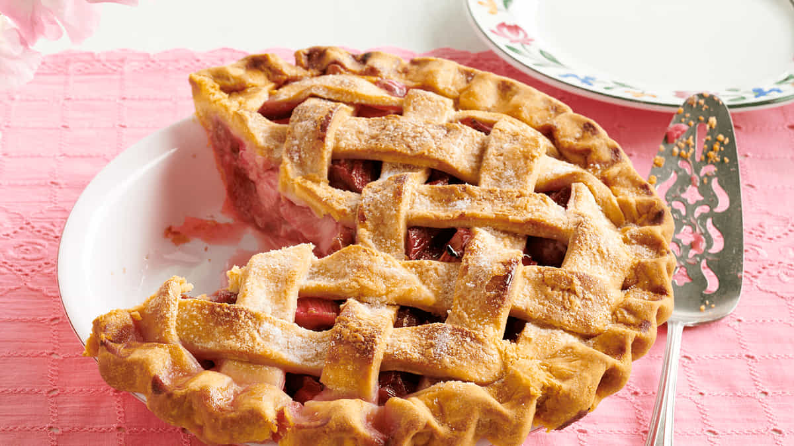

Torta de Ruibarbo

Huum... picante e doce!
 Duração 01:30hrs
Duração 01:30hrs  6 Porções
6 Porções
Ingredientes do jogo: Ruibarbo, Farinha de trigo, Açúcar
Esta receita restaura 215 de energia e 86 de saúde.
Ela pode ser obtida com a Marnie e é vendida por 400g.
Ingredientes
Massa da Torta
- 2 copos de farinha
- 2/3 de xícara de manteiga fria
- 1 colher de chá de sal
- 6 ou 7 colheres de sopa de água
- leite e açúcar(opcional)
Recheio
- 1 ½ xícara de açúcar
- 4 xícaras de frutas (ruibarbo e morangos)
- 3 colheres de sopa de amido de milho
- 1 colher de chá de sal
- 1 colher de chá de noz-moscada
- 1 colher de sopa de margarina
Modo de Preparo
- Fatie os morangos em 2 ou 3 pedaços, dependendo do tamanho, e corte o ruibarbo em pedaços de 3,5 cm.
- Em uma tigela média, misture o açúcar, o amido de milho, o sal e a noz-moscada. Acrescente as frutas e misture bem, depois deixe de lado.
- Em outra tigela média, misture a farinha e o sal. Em seguida, adicione a manteiga e use um cortador de massa (ou até mesmo os dedos) para misturá-la na farinha, até que a mistura fique parecida com pedaços de massinha ou uma textura mais granulada e solta.
- Acrescente a água, uma colher de sopa de cada vez, e mexa com um garfo para misturar até formar uma massa. Separe-a em duas partes iguais. Em uma superfície levemente enfarinhada, coloque uma parte da massa e estenda-a com um rolo de massa.
- Depois que a massa estiver achatada, transfira-a para a fôrma de torta e bata-a cuidadosamente no lugar. Corte as bordas com uma faca para remover o excesso de massa.
- Despeje o recheio na torta e cubra-o com margarina (pegue pequenas quantidades de margarina e coloque-as sobre o recheio em vários lugares para uma distribuição uniforme). Pegue a segunda parte da massa e repita o processo com a primeira parte e coloque-a sobre o recheio cuidadosamente para cobrir toda a torta.
- Corte o excesso de massa, desta vez deixando um pouco mais na borda. A massa extra será colocada sob a borda da forma de torta para mantê-la no lugar. Corte fendas no centro da torta para permitir a saída do vapor. Se quiser, você pode usar o excesso de massa para criar desenhos para decorar a torta.
- Quando estiver pronta, você pode pincelar leite na massa com um pincel de confeiteiro e polvilhar açúcar por cima.
- Asse em um forno a 190°C por 45 minutos ou até ficar pronto. Deixe esfriar por 10 minutos antes de servir.
- Picante e doce descrevem muito bem essa torta. A crosta é bonita e escamosa e o recheio é muito saboroso.